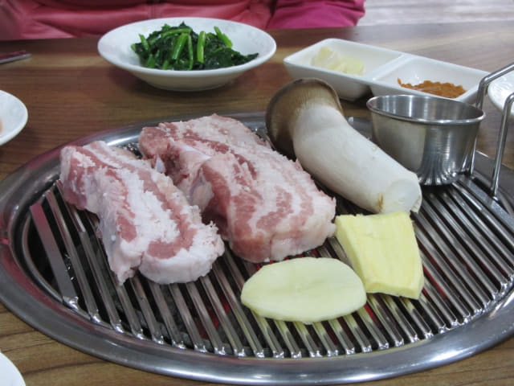

沿城山邑日出海岸慢慢走, 沿途經過幾間村屋式的餐館, 價錢都十分昂貴, 遠遠超出我們的預算, 唯有繼續向前走, 最後來我們下車的「오조해녀의집」巴士站附近, 這裡有一間專門燒黑毛豬的餐館, 看來價錢也不會便宜。望望前面, 好像沒有餐館了, 便決定在這裡吃晚餐。
黑毛豬肉是濟州島的著名特產, 含豐富維他命和礦物質, 與白豬相比, 不飽和脂肪酸的含量少很多, 相對健康很多。說到味道, 黑毛豬肉十分柔嫩, 肉質爽口彈牙, 而且沒有一般豬肉的腥味, 絕對是集美味及營養於一身。

黃昏的氣溫下降得很快, 風也頗為強勁, 身體開始感到寒冷, 便選擇暖暖的榻榻米卡座坐下。
配菜很快便送來。
接著老闆娘將兩件大大塊的黑毛豬肉送來了, 連同蘑菇、醬料一起放在烤爐上。

烤了約十分鐘, 老闆娘走來將大大塊的黑毛豬肉用剪刀剪成一小塊一小塊的, 這樣便可以開始吃啦!
香噴噴的豬肉, 看見已經令人垂涎三尺, 入口竟然不韌, 十分爽口香脆, 果然沒有豬肉的腥味, 如果用沙拉菜, 再佐以醬汁和配料包著來吃, 更加滋味無窮。
我喜歡用沙拉菜包著烤肉來吃, 分外好味。 今晚胃口很好, 除了叫了一碗白飯外, 還追加了兩盤不同的蔬菜, 最後挺着圆圆的肚子離開。
享受了一個豐富的晚餐, 十分滿足, 結帳是W35,000韓元。
離開餐館, 四周一片漆黑, 低頭冒著凜凜寒風循原路返回酒店, 就這樣結束了濟州島的第五天行程。